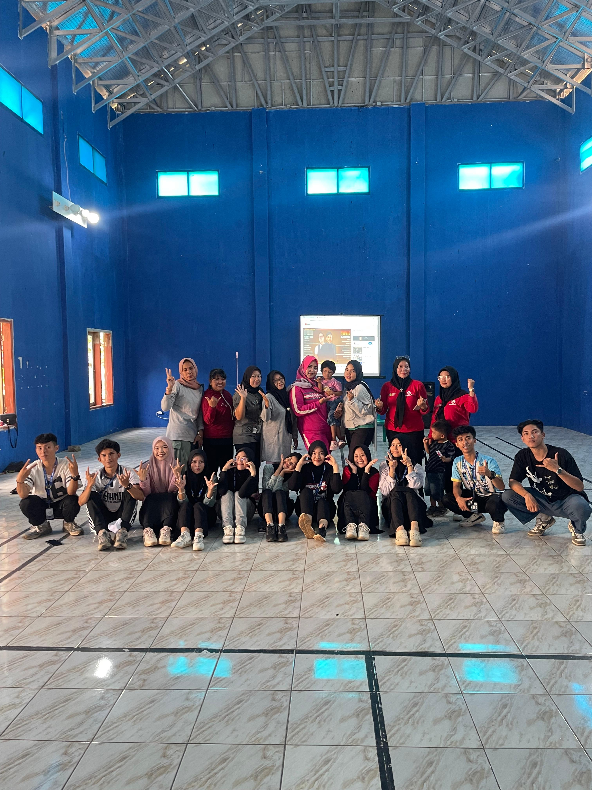

SENAM BERSAMA IBU-IBU PKK DESA SUKAMAJU
Sukamaju – Kelompok Kuliah Kerja Nyata (KKN) Universitas Suryakancana Desa Sukamju 2025 mengadakan kegiatan senam bersama ibu-ibu PKK Desa Sukamaju pada hari Jum'at pagi, 15 Agustus 2025.
Kegiatan ini berlangsung di aula desa dan disambut antusias oleh puluhan ibu-ibu. Selain bertujuan untuk menjaga kesehatan jasmani, senam bersama ini juga menjadi wadah untuk mempererat silaturahmi antara mahasiswa KKN dengan masyarakat Desa Sukamaju. Acara yang berlangsung meriah ini tidak hanya bertujuan untuk menjaga kesehatan fisik, tetapi juga sebagai sarana untuk memperkuat hubungan sosial antarwarga. Terlihat dalam foto, raut wajah gembira dan semangat dari seluruh peserta yang kompak berpose bersama setelah selesai berolahraga. Kolaborasi antara semangat Ibu-Ibu PKK yang berpengalaman dengan energi para pemuda menciptakan atmosfer yang positif dan inspiratif.
Acara yang digelar pada hari Jumat ini merupakan bagian dari program kerja untuk meningkatkan kesadaran akan pentingnya pola hidup sehat di kalangan masyarakat. Dari pantauan di lokasi, seluruh peserta, baik dari kalangan ibu-ibu maupun anak muda, tampak antusias dan bersemangat mengikuti irama musik dan arahan instruktur senam.
Kegiatan seperti ini diharapkan dapat terus dilaksanakan secara rutin untuk membangun Desa Sukamaju yang sehat, solid, dan penuh kebersamaan.